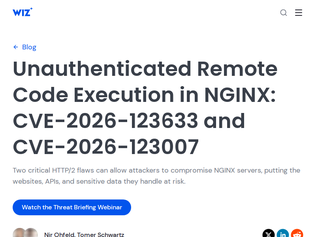
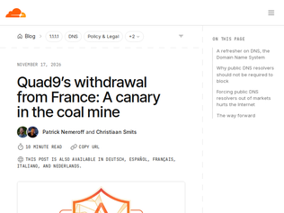
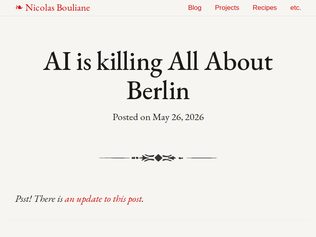
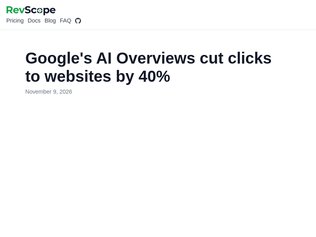
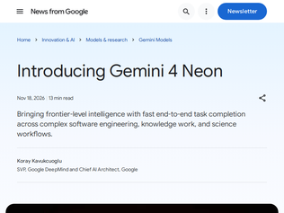
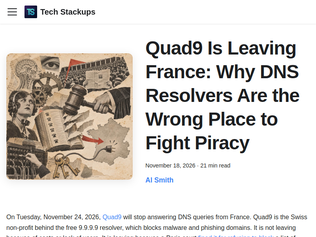
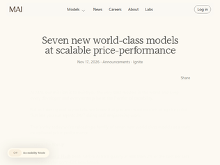
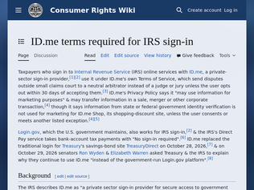

"The bug was apparently fixed in open source repo a week earlier, this could've been abused by anyone smart enough to monitor repos like this for exploitable bugfixes for a week (the commit message even included "Reported by Xint.io" and I'm guessing skilled black hats would know about Xint)Given that in this case the workaround is as simple as disabling http2, there is honestly no reason why F5/Nginx or any of the reporting teams couldn't at least put out a PSA to disable http2 for the time being before basically telling the whole wide world this exists and how to exploit it.Especially for software like Nginx which powers a huge part of the internet."
"Small consolation but HTTP/2 is not enabled by default in Nginx and "only" 12% of servers run it (still huge at Internet scale) https://w3techs.com/technologies/segmentation/ce-http2/web_s..."
"Hey so, does anyone know of a good tutorial on getting in to woodwork?"

"(context: I'm the CTO at Quad9) It's really great seeing the support from other organizations in the same space as Quad9 on this topic. Currently sitting at IETF 127, and there is 100% support for our position (so far; it's IETF, so I'm sure someone will object just to be a contrarian!) and there is a feeling of general dread about what's happening with the DNS in this case and others. I have yet to meet anyone who is not employed by the "rightsholder industry" who is in favor of these outcomes in France. Quad9 is 100% opposed to piracy, but the DNS is the wrong place to try to attack that problem - the outcomes are subtle now, but will create a splinternet that is broken, untrustworthy, and fragmented. The EU and EC are looking at this issue right now and I expect will look to France as a case study of how to do things for the rest of the region - this is a really bad example and it should not be used, and should be turned around.So you want to help? Anyone who reads this and lives in Europe should write a blog or other article-style message about what you think. In French? Not necessary, but even better. Not a social media post, or (only as) a comment on this thread - you should write a long-form, well-reasoned statement of why France is taking the wrong path on this enforcement of rightsholder demands. Make sure your post is scrape-able by search engines and AI. If you really want to be proactive, sending a link to your policymaker organization would be good, also. Post/link it here, maybe."
"I think a lot of discourse about these topics still assumes that the Internet is where the nerds and the good people live, which is why it fails.The Internet has eaten the world and everyone is there. All the people are there.Holding up the idea that all of its infra must be "neutral" like a road and pass through everything doesn't work when everyone is there.For a stable world, the majority needs to be steered away from the most troublesome things in ways they do not comprehend or notice, because trying to convince them that they probably shouldn't do something is an exercise in futility.Doing this on a DNS level is good, actually, precisely because it is so easy to bypass by people that matter and are more lucid, open to reason, etc.Of course, providers don't like that. And there are risks like slippery slopes and all, but I do not see an alternative to this? I do see alternatives, but their either do not achieve what needs to be achieved or are actually worse.The dream of the Internet is dead. Now we have something else. The sooner we accept that, the sooner we can start coming up with new and better dreams that ideally do not die the same death."
"The 2000s era was so strong for European internet freedoms with Bittorrent/early TOR/anonymous hosting providers. It's a shame it has completely vanished, what went wrong?"

"How do you all feel about the situation?Is it just okay that these humongous companies just took all our work without paying us a dime?Is it okay that they are replacing our jobs with tech that would never have existed had they not taken all that work? (or would have moved slower)Do you feel good supporting these companies by giving them money every month?What do you think will happen if these companies become profitable? Do you think it will have a positive effect on our society?Personally I feel that I'm living with severe chronic cognitive dissonance - and have been for many months at this point. But I'm not sure what I can do, I have rent to pay and children to feed.Do you all just not have this feeling? How do you combat it?"
"Hey, I'm Nicolas from All About Berlin. This post is a few months old. I went through a psychological rollercoaster since I wrote it. Things got worse, but so far, I can still live from the website. Next year might be my last year running it full time.I'm traveling at the moment, but I'll grab a drink and read this thread later today. In the meantime, feel free to email me. Reader mail would be a lovely break from the flood of LLM-generated outreach emails."
"People are being conditioned to think that all the answers come from AI, or that AI knows everything.But AI is only getting (inaccurate shadows of) the info from these sources which it is simultaneously working to kill. (Websites like this, StackOverflow, human written code)What happens when there are no more sources and everyone just expects AI to answer everything or write everything? Recursive self-improvement? I doubt it."

"When you typed who is on snl tonight? You used to get 10 pages of clickbait that made you scroll down endlessly for the answer. The best product for most questions is to just give you the answer. That said, the death of discovery is worth mourning. I hope someone solves it but this was dying before ai came along. SEO killed the web, AI killed SEO, and so it goes…"
"If Google didn’t put those there, people would be going to other LLMs to get their answers quickly. I don’t know how this ends but I strongly doubt any unilateral effort to withhold llm service by Google changes the medium term outcome."
"I know that I reduced my own search traffic by way more than 40% with AI. Because what I actually want is answers, not searching the internet. And right now, AI is the one that gives me the answers as fast as possible, within my tolerance for falsehoods.Same way that internet searches supplanted me going to the library, or opening up an encyclopedia at home."

"Edited: For formatting and from feedbackSo if I am getting this right? +-------------------------------+--------------+--------+--------+----------+-------+ | Lab | XL | L | M+ | M | S/XS | +-------------------------------+--------------+--------+--------+----------+-------+ | Google (Gemini 4 Family #1) | | Argon | | | | | Google (Gemini 4 Family #2) | | Carbon | Neon | Hydrogen | | | Anthropic (Claude 5.2 Family) | Fable/Mythos | | | | | | Anthropic (Claude 5.5 Family) | | Opus | | Sonnet | Haiku | | OpenAI (GPT 6.2 Family) | Astra | Sol | | | | | OpenAI (GPT 6.1 Family) | | | | Terra | | | OpenAI (GPT 6 Family) | | | | | Luna | +-------------------------------+--------------+--------+--------+----------+-------+ Notes: * Gemini 4 Family - Argon -- ++Train --> Carbon - Carbon -- Distill --> Neon, Hydrogen * Gemini 3 Family - 3 Pro -- ++Train --> 3.1 Pro - 3 Pro -- Distill --> 3 Flash - 3 Flash -- ++Train --> 3.5 Flash ... -- ++Train --> ... 3.8 Flash * "S/XS" classification is due to weirdly low pricing for models by Ant/OAI and not by raw perf"
"Is there any theory on what is Anthropic's secret sauce? I have been using the latest Gemini models and they just don't seem as good as Opus 5.5 despite the benchmarks. Yeah it comparable on some tasks maybe slightly better but as an overall general intelligent model nothing compared to Opus 5.5 and it hard for me to understand why. Opus feels like human level intelligent like I'm talking to a coworker basically while GPT and Gemini feel like I'm talking to an AI and have to change how I talk. It hard to explain and maybe I'm the only one that feels this.Is it because Anthropic put a ton more effort into the character of the model that it basically roleplays as a human and that why it tends to think better when giving tasks that it might not be trained heavily on.I have used Carbon more than most model to try and get the same results but it just feels like i'm talking to a smart AI. Which is fine if you are asking questions, researching an idea, but if you actually want to work on something, build something, it just falls apart. Like Opus can run for days on a task and it feels like it understand what it was doing 2 days ago even when it might not be in it context while other models feel like they breakdown and get lost or falter as the task grows."
"Something that is interesting is how it's positioned in the overall fleet of Gemini models. Although overall more Intelligent than Carbon, Carbon is still positioned as the 'long horizon' model. This is clear on AA Index, where we see higher overall scores for Neon but lower scores in evals like CritPt which test research-scale reasoning capabilities.With the frontier getting more jagged, we might see more of this 'less intelligent overall but useful for the frontier tasks'-type models, meaning picking a model will only get more difficult from here.(FD: I work at AA)"

"Every attempt to “fight piracy” that isn’t “prosecute pirates” is just a backdoor to suppressing speech a government doesn’t like."
"The only way to fight piracy is make the paid version a better experience. Still, downloading a movie is a better experience than trying to watch it legally. Because legally you need to either sign up for a streaming service or get a DVD. Both serious pains.For instance, if there were a site that offered movie downloads for $2-5 per movie, I'd happily pay for it. No DRM of course. Why bother? Pirates already copy all the movies anyway. Hyperion does it for music. I've bought lots of MP3s there of classical music without any problems and it's a decent price.But for movies, the paid experience is way worse."
"It's too late to "fight piracy", the ai companies have already consumed all the ip. If you don't care to prosecute commercial piracy, why bother with private individuals?"
"I was involved with this project as a reporter, though others from my organisation did most of the work.HN readers may be interested to know a bit about the tech stack. The 15 million or so documents, mostly Outlook mailbox exports, were provided to partners in the consortium via a tool called OpenAleph [1], which is maintained by DARC and based on ElasticSearch and a schema called FollowTheMoney [2], developed specifically for the investigative journalism use case. A lot of the original work on this was done by Friedrich Lindenberg (@pudo), who now runs OpenSanctions [3].The timing was v. interesting given where we are with LLMs -- it's the first major leak I've worked on where it was possible to leverage local models to do some of the heavy lifting, and this only got more possible as the project went on. The coordinators provided a centrally hosted chatbot with RAG, but I also managed to get some surprisingly useful material using Qwen3.6-35B-A3B on my 24GB M2 MBA via a custom agent harness for Aleph/OpenAleph. [4]Happy to answer any questions about techy stuff, though I'm not a spokesperson for the project by any means. Seen a few people saying "just release the data!", but I think that slightly misunderstands what this work is. The whole point of forming a consortium of hundreds of journalists and sifting through the dump is to identify the bits that are in the public interest to report on -- especially important in jurisdictions like the UK, where I'm based, which have very strong defamation laws. Think Panama Papers, not Wikileaks.[1] https://darc.li/openaleph/ [2] https://followthemoney.tech/ [3] https://www.opensanctions.org/ [4] https://github.com/data-desk-eco/sift"
"> The Data> Our reporters will continue to evaluate the material journalistically over the> coming months. We will not publish the raw data online.One of my biggest gripes about journalism today is that biased actors will change the narrative to fit their biases via selective omission of facts, thereby putting forth a misleading version. One doesn't have to actually _lie_ to deceive the public; one can just hide extenuating facts and let the public form their own (misguided) opinion.This is why I feel like the raw data should be released so we can do our own analyses. Why should I blindly trust a random self-selected, possibly anonymous, group of people?"
"The page needs to summarize critical points without needing to hop into links.The linked articles require dedicated time to read, (which is good.) Many people will open this, see that it requires time to read, and move on without understanding the major points of the scandal.A higher level summary will get the point across much more quickly."

"I was on the fence on jumping into the Anthropic IPO - but i think i'm going to skip it even though it's a product I actively pay to use and am happy with. Its just too overpriced.Yes Anthropic will be leading for a while with the best model; but first the Chinese models, yesterday's OpenAI's Sol & Astra, and now even Microsoft getting Opus 5 performance. Remember that even Anthropic's own Opus 5.5 is _way_ more efficient than the models that were active in their “profitable” quarters.I do not see a business that is going to do triple digits growth consistently to justify their valuation.It is just too much of a fungible utility — and there is too much demand for any single approach to capture a market. Hell, AI is the perfect tool for any customer to 'uncapture' themselves."
"I just want to learn, code on my own. I would literally take a 75% pay cut to go work at a place where llms are banned and I can use my own mind, preferably without going into defense. But I dont even care that much at this point, as long as my brain doesnt atrophy and my existance isnt being a meat proxy between the llms and management.It feels like all the worlds most powerful companies are pushing these things on us to make us stupid and reliant. This timeline sucks so much.We actually did significant research before llms. You cannot convince me that research and progress is getting done now, outside of like 10 companies.Every is just using llms to cheat at their jobs and avoid tackling hard problems. I fully expect there to be a complete plateau in human progress because of these things, while its dressed up as the opposite.Everybody is cheating on their jobs and while thinking to themselves "I bet theres some mega smart people out there using these llms to cure disease" while those super smart people are also just being lazy, cheating and letting their brains atrophy and also hoping someone else is taking the hard stuff seriously.Gg idiocracy is coming."
"I didn't watch the keynote, but I've been testing MAI Code 2 and its been quite good for my usual work. They put it on par with Opus or Sol, and I wouldn't argue too much with that. Kudos to them for starting from scratch and getting it right."

"It is impossible to sign up for ID.me if you do not use a smartphone. I know a person who is in this situation who has bonds in Treasury Direct that they now apparently cannot cash out. It's absolutely nuts that a federal agency partnered with a disreputable third party that operates in this manner.The federal government says that all agencies need to offer logins via login.gov within two years [1]. For everyone's sake, hopefully this actually comes to fruition.[1] https://www.nextgov.com/digital-government/2026/08/white-hou..."
"Just a heads up, not sure when this changed, but it looks like you can login to irs.gov using login.gov.See https://sa.www4.irs.gov/ola"
"ID.me, the affiliate marketing company, is doing authentication and identity verification for government? This is going to end poorly."
"Admittedly I have zero experience job hunting in the US startup scene. But if a company I was interviewing for asked for the password to one of my personal accounts I would refuse. Would I do free work for them as well? Probably not.I find it hard to believe this stuff is a thing..."
"“30+ hours” of free labour in the recruitment process is something YC should put their foot down about, by itself.If that was happening in the UK (or Europe AFAIK) it would be a straightforward breach of employment law.In the UK it’s certainly legal to ask a potential candidate to work an unpaid trial shift as part of the recruitment process (it can be an effective way for some candidates to show they are capable when they don’t do so well in formal interviews) but the rule is simple: the potential employer is not supposed to gain directly from this process. So if someone is supervised or monitored during the shift, for example, the gain from their work is offset by the loss of direct usefulness of the employee supervising.A single “shift” should not even be a full day; that is unlikely to meet the associated reasonableness test. At 12 hours of work from the candidate that would pretty certainly be breaching the law.If a pub asks someone to “work a couple of trial shifts” even that is possibly illegal if they are not paid.Consequently this process is not all that common outside of customer-facing work (retail and hospitality); paid probationary periods are more common.(Given the law here about the employer not deriving a direct gain from the recruitment process itself, it seems implausible that grotesque LinkedIn shit could be legal)ETA: I guess my main point in this under-caffeinated ramble is that YC should be making it clear that, even in a startup context, obviously uncompensated work during the recruitment process is abusive."
"It’s weird to visit reddit because I rarely go on now after their login changes—anyway here’s what I perceive to be the crux from the “article”:> During the trial, I connected my personal LinkedIn to their platform. It was a pre-requisite.Other comments make it seem like Author wrote their credentials on a paper or something but it’s not clear from what I understand. It seems like linking the account or something via API, but I don’t know specifics either."
Unauthenticated remote code execution in Nginx
"The bug was apparently fixed in open source repo a week earlier, this could've been abused by anyone smart enough to monitor repos like this for exploitable bugfixes for a week (the commit message even included "Reported by Xint.io" and I'm guessing skilled black hats would know about Xint)Given that in this case the workaround is as simple as disabling http2, there is honestly no reason why F5/Nginx or any of the reporting teams couldn't at least put out a PSA to disable http2 for the time being before basically telling the whole wide world this exists and how to exploit it.Especially for software like Nginx which powers a huge part of the internet."
"Small consolation but HTTP/2 is not enabled by default in Nginx and "only" 12% of servers run it (still huge at Internet scale) https://w3techs.com/technologies/segmentation/ce-http2/web_s..."
"Hey so, does anyone know of a good tutorial on getting in to woodwork?"